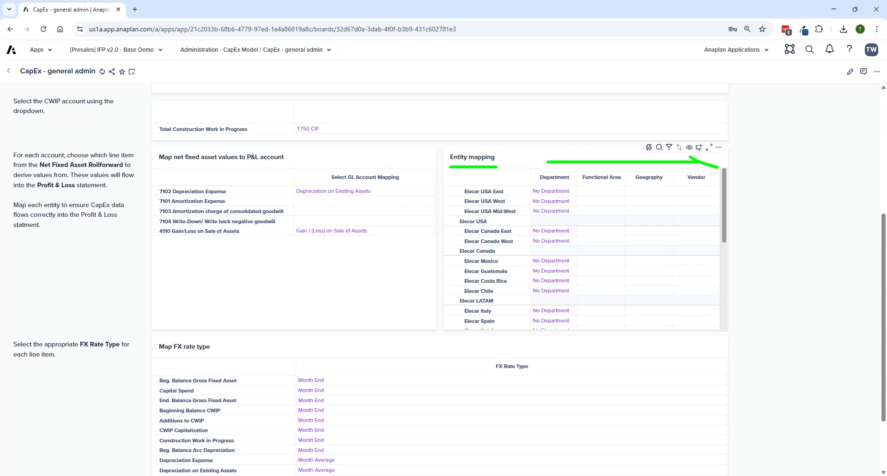

CapEx Planning
Asset planning, depreciation, disposals, and the entity-only dimension constraint
Module 3Module Walkthrough20 min
⚠ Entity-Level Only
CapEx in IFP v2.0 is planned at Entity level ONLY — no Department, Geography, or other dimensions. The entity-to-department mapping in CapEx General Admin handles distribution of depreciation to P&L dimensions. Department-level CapEx requires an extension.
Admin Setup
CapEx – General Admin
- Asset types/classes with payment plan parameters and useful life settings
- New in v2.0: Computer Hardware and Computer Software are now separate asset classes (accounts 1712 and 1772)
- Entity-to-department mapping — every entity must have a department mapped
- Map Net Fixed Asset Values to P&L accounts
- Map Asset Types to Depreciation Accounts
- Select CWIP (Construction Work in Progress) account
- Select FX Rate Type for currency translation
🚨 Leaf-Level Accounts Only
All mappings in CapEx General Admin must point to leaf-level accounts. Parent-level mappings cause calculation failures and missing data in FP.
End-User Planning Pages
CapEx – New Asset Purchases

- Per asset: asset class, order date, in-service date, CWIP flag, depreciation method
- P&L and BS impact shown on timeline automatically
- Custom payment plans — enter exact cash payment schedule for specific assets
Other CapEx Pages
| Page | Purpose |
|---|---|
| CapEx – Funding Details | Default payment plan (read-only); custom payment plan entry by period |
| CapEx – By Asset Type | Plan at asset class level — no individual asset tracking |
| CapEx – Asset Disposals | Enter disposal details; system calculates gain/loss and shows P&L/BS impact |
| CapEx – Net Fixed Asset Roll-Forward | Read-only report of net fixed asset roll-forward calculations |
Sync to FP
After CapEx planning: Administration → Financials Model → FIN – Import from CapEx Model.
💡 Polaris Performance Note
When adding new assets, Polaris is optimized for bulk additions. Adding assets one at a time can be slow — batch additions where possible.